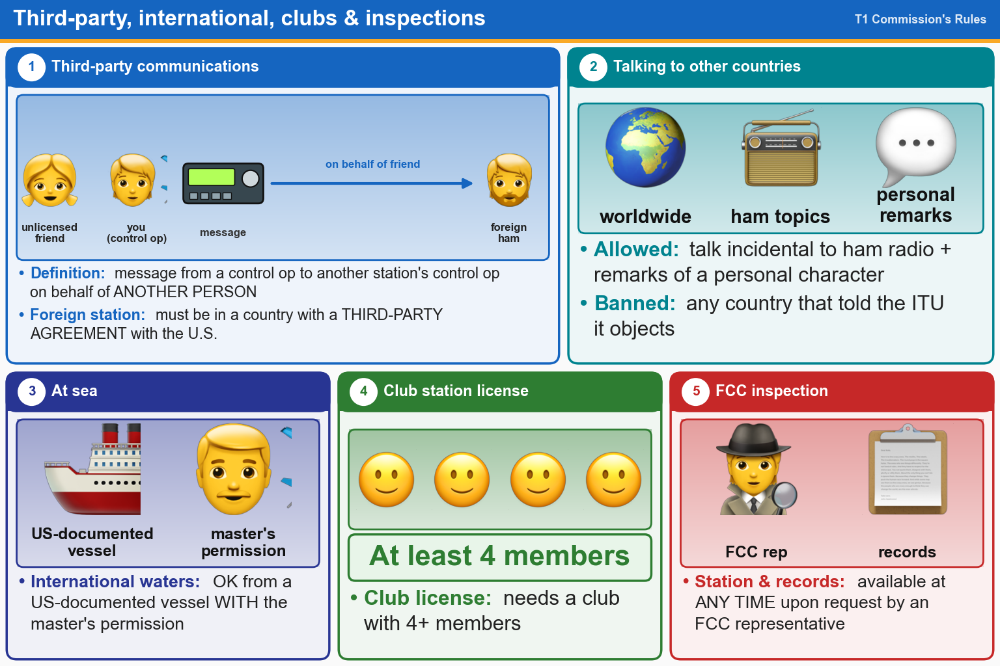

💡 Passing a message for someone else = third-party. Foreign country must have an agreement with the U.S.
Pick an answer for each question, then press Grade at the bottom.
T1F08[97.3(a)(47)]
What is the definition of third-party communications?
✘A.Operation when the transmitting equipment is licensed to a person other than the control operator
✘B.Amateur radio communications where three stations are in communications with one another
✔C.A message from a control operator to another amateur station control operator on behalf of another person
✘D.Temporary authorization for an unlicensed person to transmit on the amateur bands for technical experiments
T1F07[97.115(a)(2)]
Which of the following restrictions apply when a non-licensed person speaks to a foreign amateur radio station via a station under the control of an FCC-licensed amateur radio operator?
✔A.The foreign station must be in a country with which the U.S. has a third-party agreement
✘B.The licensed control operator must do the station identification
✘C.The person must be a U.S. citizen
✘D.All these choices are correct
T1C03[97.117]
What types of international communications are FCC-licensed amateur radio stations permitted to make?
✘A.Only communications incidental to contest exchanges; all other communications are prohibited
✘B.Communications incidental to conducting business or remarks of a personal nature
✔C.Communications incidental to the purposes of the Amateur Radio Service and remarks of a personal character
✘D.Any communications that would be permitted by an international broadcast station
T1D01[97.111(a)(1)]
With which countries are FCC-licensed amateur radio stations prohibited from exchanging communications?
✘A.Any country banned from making such communications by the American Radio Relay League (ARRL)
✔B.Any country whose administration has notified the International Telecommunication Union (ITU) that it objects to such communications
✘C.Any country banned from such communications by the International Amateur Radio Union (IARU)
✘D.Any country whose administration has notified the American Radio Relay League (ARRL) that it objects to such communications
T1C06[97.5(a)(2), 97.11(a)]
Which of the following statements is true about using your amateur radio license when operating aboard a vessel or craft in international waters?
✘A.Amateur operation is prohibited in international waters
✔B.You may operate from a US-documented vessel with the master's permission
✘C.You may only operate during maritime emergencies
✘D.You need special FCC authorization for maritime mobile operation
T1F11[97.5(b)(2)]
Which of the following is a requirement for the issuance of a club station license grant?
✘A.The club must be registered with the American Radio Relay League (ARRL)
✘B.The trustee must have an Amateur Extra Class operator license grant
✔C.The club must have at least four members
✘D.All these choices are correct
T1F01[97.103(c)]
When must the station licensee make the station and the station records available for inspection?
✘A.At any time ten days after notification by the FCC of such an inspection
✔B.At any time upon request by an FCC representative
✘C.At any time after a written notification by the FCC of such inspection
✘D.Only when presented with a valid warrant by an FCC official or government agent